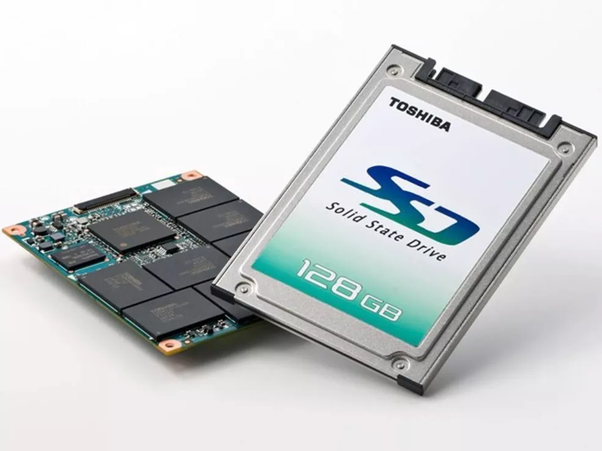
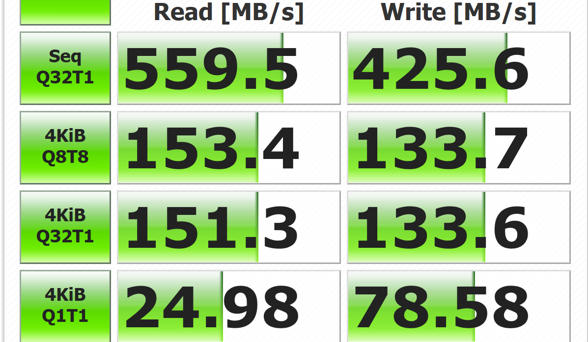
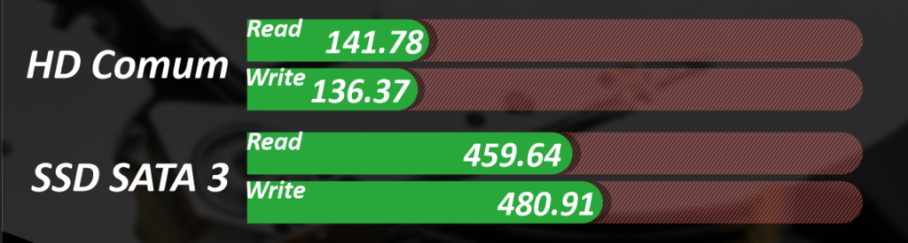
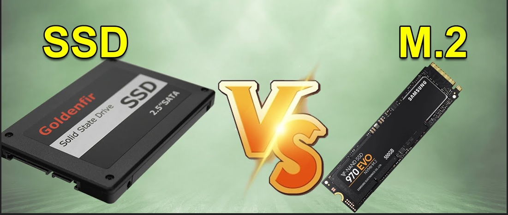

No tema de hoje abordaremos sobre SSD, sua História, suas vantagens, desvantagens, velocidade e qual escolher na hora de comprar.
Então, aconselho que já prepare uma pipoca ai que o conteúdo é bastante interessante!
 Os dispositivos SSD começaram a aparecer de maneira massiva no mercado a partir de 2006, mas pode-se dizer que a tecnologia em si surgiu muito antes, embora não com o mesmo nome. Em 1976, uma companhia de nome Dataram colocou no mercado um dispositivo de armazenamento de dados de nome Bulk Core, que era composto por oito módulos de um tipo de memória não-volátil com a incrível (para a época) capacidade de 256 KB cada um. O Bulk Core "emulava" as unidades de disco utilizadas na época, com o diferencial de ser mais rápido que estas. O equipamento custava cerca de US$ 10 mil e era utilizado em centros de processamento de dados. Em vista de suas características (uso de memória não volátil e maior velocidade de transferência de dados), o Bulk Core pode ser considerado o primeiro SSD do mercado. Muita gente se pergunta se a tecnologia SSD sinaliza o fim da era dos discos rígidos. É difícil dizer. Em relação à capacidade de armazenamento, os HDs ainda apresentam excelente relação custo-benefício, sem contar que esses dispositivos contam com uma média de durabilidade bastante satisfatória. Como os SSDs têm custo de armazenamento mais elevado e os HDs continuam sendo aperfeiçoados para ganhar mais capacidade e durabilidade, as duas categorias deverão conviver "pacificamente" por um longo tempo.

Enquanto os discos rígidos (Hard Disk Drive, ou HDD) são formados por partes móveis e mecânicas, os SSDs (Solid State Drives) têm funcionamento com componentes eletrônicos, o que os faz menores e menos exigentes de energia.
A principal vantagem do SSD sobre os HDs tradicionais é a velocidade em guardar e acessar arquivos em sua memória Flash, o que ocorre de forma praticamente instantânea. As taxas de leitura e transferências ficam em torno de 500 MB/s em SSDs mais básicos, mas podem ultrapassar 7.000 MB/s em modelos mais modernos.
A desvantagem principal do SSD é o preço, tanto para um drive externo como para um notebook equipado com SSD, na comparação de um modelo similar, mas que vem com armazenamento HD.
Quanto maior for o tamanho exigido pelo usúario, maior será o preço. Laptops que ja vem com SSD de fábrica tendem a ter um custo maior, a depender da loja sai mais viável comprar fora a parte.

A tecnologia Serial ATA (SATA) foi introduzida nos anos 2000 como uma melhoria à tecnologia Parallel ATA existente, que foi prejudicada pelo tamanho do cabo, custo, desempenho e funcionalidade. Ambas as tecnologias foram suficientes para drives de disco rígido (HDDs), que tinham muito menos capacidade do que os drives de estado sólido (SSDs) de hoje em dia.
O advento dos SSDs com base em SATA demonstrou que o barramento ATA alcançou seu limite de desempenho. Onde os HDDs somente podiam alcançar 50-120 MB/s em desempenho de gravação, SSDs poderiam saturar o barramento SATA a 550 MB/s. A despeito da limitação de barramento, é comum observar uma melhora geral no desempenho do sistema de 10 a 15 vezes ao usar SSDs com base em SATA no lugar da antiga tecnologia HDD.

O padrão atual no que diz respeito a performance é o NVMe PCIe 4.0, que pode oferecer velocidades de leitura e escrita realmente elevadas. Os SSDs SATA possuem uma limitação de velocidade próxima aos 600 MB/s, que, mesmo sendo muito abaixo de um modelo NVMe, ainda é muito mais eficiente que um HD convencional.
Até mesmo os consoles de nova geração, como Playstation 5 (PS5) e Xbox Series X, trazem SSDs de alto desempenho, que por, utilizarem o que há de mais moderno no padrão, podem entregar velocidades de até 5.000 MB/s, segundo as fabricantes. Logo, é possível afirmar que para acompanhar o que há de mais atual no segmento dos SSDs, atualmente é preciso de uma placa mãe com suporte ao padrão NVMe com PCIe 4.0.
Vale ressaltar que, utilizado junto ao padrão PCIe 4.0, mais recente, as velocidades com o NVMe podem passar dos 7.000 MB/s, como explica o especialista da Kingston. Segundo ele, a tecnologia será padrão para componentes de armazenamento em breve.
Nós do Blog do Victor, utilizamos SSD em nossas maquinas, e é notável ver a diferencia, então qual nosso conselho? Caso sua maquina tenha suporte a SSD NVME, vale a pena investir um pouco mais de grana nele, por conta de seu maior desempenho de velocidade, leitura e gravação. Caso não tenha esse suporte, aconselhamos a troca do HDD pelo SSD Sata. Se você não sabe se seu dispositivo possui suporte a esta tecnologia, aconselhamos que visite o site da fabricante do seu dispositivo e procure por ele.